Zebra Shift guide · 20 pictures
Microscope slides to recognise
These are the slides that change management at the bedside: a parasite on a blood film, organisms in CSF, crystals in a joint or casts in the urine.
Look at the background first (which stain or preparation it is), then at the cells, then at anything that should not be there.
Ring forms inside red cells, some doubled: P. falciparum

Delicate rings with one or two chromatin dots, several cells infected and some with two rings, plus a banana-shaped gametocyte: falciparum malaria.
Often confused with: Howell–Jolly bodies · Normal blood film · Babesia (Maltese cross)
In the game: Falciparum Malaria, Cerebral Malaria
Schistocytes (fragmented red cells) with very few platelets
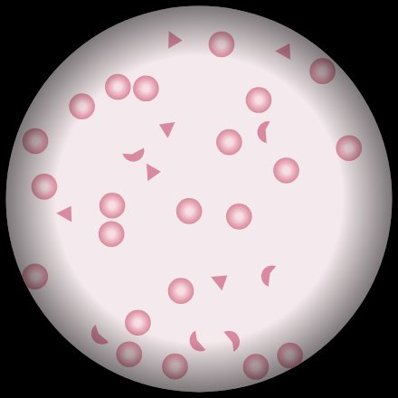
Helmet and triangle-shaped red cell fragments and almost no platelets: a microangiopathic haemolytic anaemia, such as TTP.
Often confused with: Spherocytes · Target cells · Normal blood film
In the game: Thrombotic Thrombocytopenic Purpura, HELLP Syndrome
Large atypical (reactive) lymphocytes
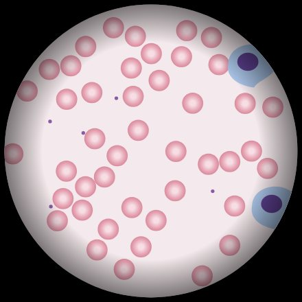
Big lymphocytes with plenty of pale blue cytoplasm that hugs the neighbouring red cells: reactive (Downey) cells, typical of EBV.
Often confused with: Myeloblasts with Auer rods · Hypersegmented neutrophils · Normal blood film
In the game: Infectious Mononucleosis
Trypanosomes: wavy flagellated parasites between red cells
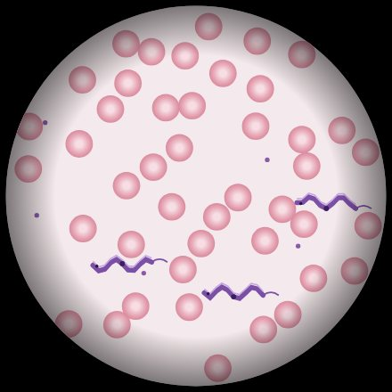
Slender, wavy extracellular parasites with an undulating membrane, a central nucleus and a free flagellum: trypomastigotes.
Often confused with: Microfilariae · Spirochaetes (Borrelia) · Malaria gametocytes
In the game: African Trypanosomiasis
Sickle cells with target cells and Howell–Jolly bodies
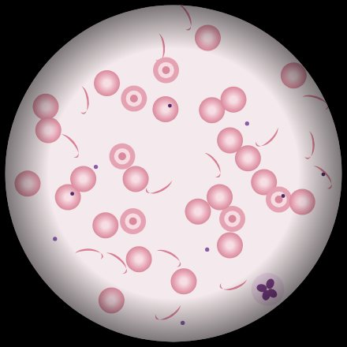
Crescent-shaped cells, target cells and small nuclear remnants (a sign of a non-working spleen): sickle cell disease.
Often confused with: Schistocytes · Spherocytes · Normal blood film
In the game: Sickle Cell Pain Crisis
Gram-negative diplococci inside neutrophils
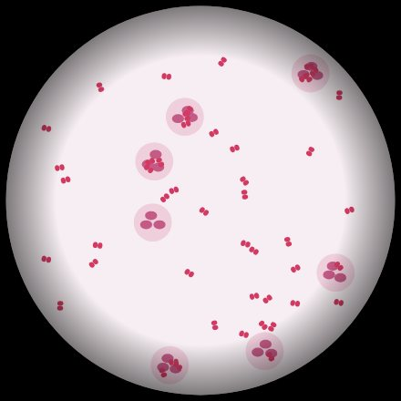
Pink, kidney-bean pairs of cocci, many inside neutrophils: Neisseria meningitidis in CSF.
Often confused with: Gram-positive diplococci · Gram-positive rods · Yeasts (Cryptococcus)
In the game: Meningococcal Meningitis
Gram-positive lancet-shaped diplococci
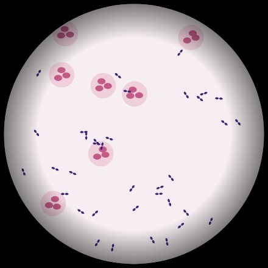
Purple, pointed pairs of cocci among pus cells: Streptococcus pneumoniae.
Often confused with: Gram-negative diplococci · Gram-positive cocci in clusters · Gram-negative rods
In the game: Community-Acquired Pneumonia
Acid-fast bacilli: red rods on a blue background
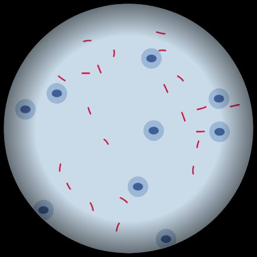
Slender, slightly beaded red rods on a blue counterstain in a Ziehl–Neelsen stain: mycobacteria.
Often confused with: Gram-positive cocci in chains · Fungal hyphae · No organisms seen
In the game: Pulmonary Tuberculosis
Macrophage packed with Leishman–Donovan bodies
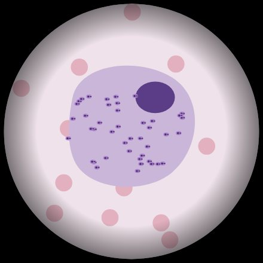
A macrophage stuffed with tiny oval bodies, each with a nucleus and a small rod-like kinetoplast: Leishmania amastigotes. Histoplasma has no kinetoplast.
Often confused with: Megaloblastic changes · Gaucher cell · Histoplasma yeasts
In the game: Visceral Leishmaniasis
Darting comma-shaped bacteria (Vibrio)
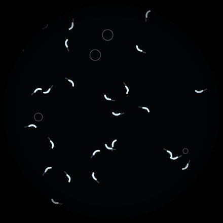
Bright, curved comma-shaped rods shooting across a dark-field slide: Vibrio cholerae.
Often confused with: Spirochaetes · Motile Giardia trophozoites · No organisms seen
In the game: Cholera
Large gram-positive rods in chains ("boxcars")
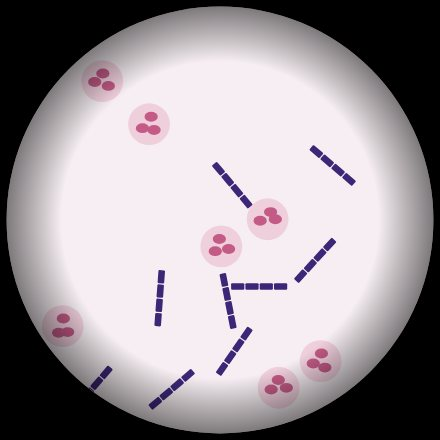
Big, square-ended purple rods lined up end to end like railway carriages: Bacillus anthracis.
Often confused with: Gram-positive cocci in chains · Gram-negative rods · Branching gram-positive filaments
In the game: Inhalational Anthrax
Bipolar "safety-pin" coccobacilli
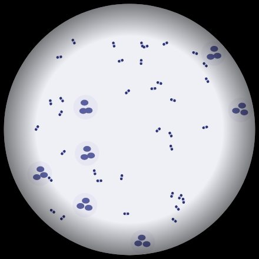
Small rods stained darker at both ends, like a closed safety pin: Yersinia pestis on a Wayson or Giemsa stain.
Often confused with: Gram-positive diplococci · Spirochaetes · Yeast cells
In the game: Bubonic Plague
Needle-shaped, negatively birefringent crystals: gout
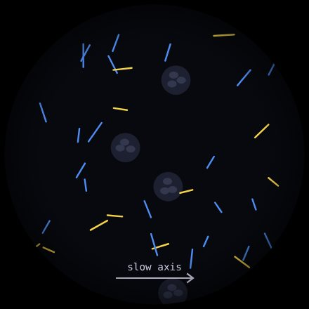
Thin needles that glow yellow when they lie along the compensator axis and blue across it are negatively birefringent: monosodium urate. Pseudogout crystals are short rhomboids with the opposite colours.
Often confused with: Rhomboid, positively birefringent crystals: pseudogout · Gram-positive cocci: septic arthritis · No crystals seen
In the game: Acute Gout
Envelope-shaped calcium oxalate crystals
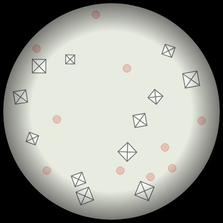
Square crystals with an X across them, like the back of an envelope: calcium oxalate dihydrate. With a high anion gap and a high osmolal gap, think ethylene glycol.
Often confused with: Coffin-lid triple phosphate crystals · Hexagonal cystine crystals · No crystals seen
In the game: Ethylene Glycol Poisoning
Red cell casts: bleeding from the glomerulus
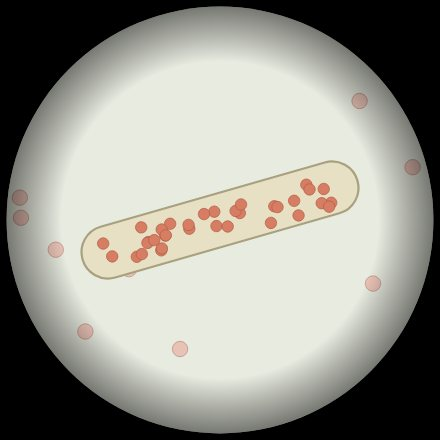
A cylinder moulded in a kidney tubule and packed with red cells. Red cells can only get into a cast inside the nephron, so this means glomerulonephritis.
Often confused with: White cell casts · Hyaline casts only · Free red cells from the bladder
In the game: Acute Post-Streptococcal Glomerulonephritis
White cell casts: infection or inflammation in the kidney itself
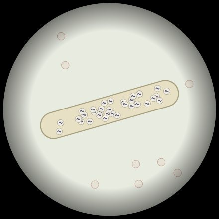
A tubular cast full of white cells puts the inflammation inside the kidney, so with fever and loin pain this is pyelonephritis rather than a simple bladder infection.
Often confused with: Red cell casts · Hyaline casts only · Bacteria without casts (cystitis)
In the game: Acute Pyelonephritis
Encapsulated budding yeasts with clear halos: Cryptococcus
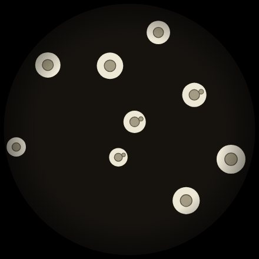
Round yeasts, some budding, each surrounded by a clear halo where the thick capsule keeps the ink away: Cryptococcus neoformans.
Often confused with: Red cells only · Candida with pseudohyphae · Toxoplasma cysts
In the game: Cryptococcal Meningitis
Small pale red cells with basophilic stippling: think lead
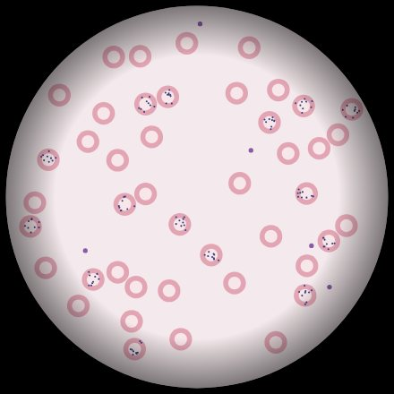
Small, pale (microcytic, hypochromic) red cells with fine blue dots scattered through them: leftover RNA because lead blocks the enzyme that clears it.
Often confused with: Target cells of thalassaemia · Howell–Jolly bodies · Malaria parasites
In the game: Lead Poisoning
Many blasts with scanty cytoplasm and no Auer rods: acute lymphoblastic leukaemia
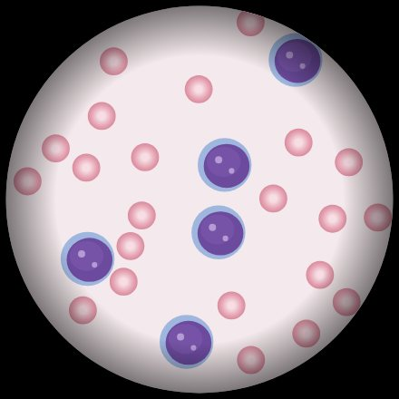
Large cells with a high nucleus-to-cytoplasm ratio, fine chromatin and nucleoli crowd out the normal cells. No Auer rods, and in a child this is most likely ALL.
Often confused with: Myeloblasts with Auer rods (AML) · Reactive lymphocytes (glandular fever) · Smear cells (CLL)
In the game: Acute Lymphoblastic Leukaemia
Motile amoebic trophozoites in CSF: Naegleria fowleri
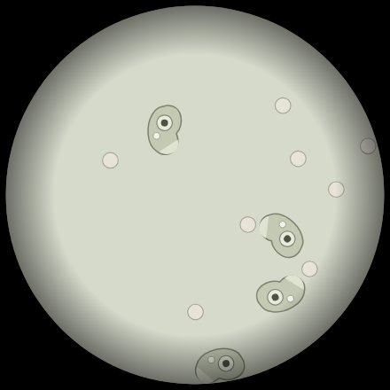
Shape-shifting cells pushing out blunt pseudopods, each with a nucleus holding a big central dot (karyosome): free-living amoebae. After warm freshwater swimming this is primary amoebic meningoencephalitis.
Often confused with: White cells only (bacterial meningitis) · Cryptococcus · Red cells from a traumatic tap
In the game: Primary Amoebic Meningoencephalitis